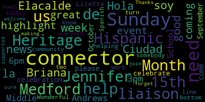

[Lungo-Koehn]: Hola, soy Briana Elacalde de la Ciudad de Medford, and I'm here with the good news of the week, which is to highlight a great event that's coming up this Sunday at the Andrews Middle School from 3pm to 6pm. It's our Hispanic Heritage Month celebration. Hispanic Heritage Month is September 15th to October 15th. So please come down on Sunday to celebrate with us. And today, I'm with Jennifer, our liaison, and Lizette, our community connector. Both work for Medford, helping with all of our needs. So Jennifer, I'll turn it over to you.
[Alvarez]: Hi, my name is Jennifer. I'm the Spanish community liaison for the city of Medford. We help with mass health applications. We have food pantry. We help with housing. Anything you need, you can call the city. We have a multicultural language line. So you can call us, and either me or Lisette or one of the other liaisons or connectors will give you a call back. And yeah, so don't forget to come to our event on Sunday. Yes. OK.
[Carteiro]: Hello, my name is Lisette. I am Medfern's connector. I help connect everyone to the things that the mayor's office offers. Jennifer is here to help with anything related to MassHealth applications, anything related to food, or anything related to home problems, anything that you need. We are here to help you, and don't forget that
[Lungo-Koehn]: Wonderful. So bottom line, if you need help or you know somebody that needs help, we have connectors here. Not only Spanish connectors, but these are two of our over 10 connectors and liaisons that are making sure everybody feels welcome and supported. And don't forget to join us this Sunday. Thanks.
|
total time: 0.87 minutes total words: 147  |
|||
{kind=link}